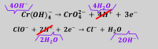
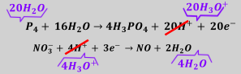
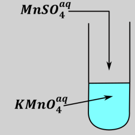
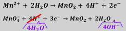
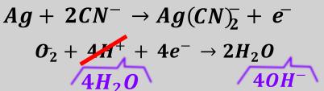
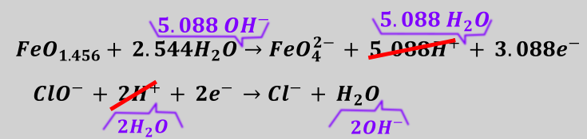
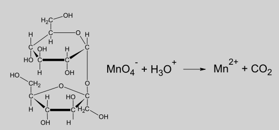

Reakcje redoks to reakcje, w których zmienia się stopień utlenienia przynajmniej dwóch reagujących atomów. Z uwagi na to że za stopień utlenienia odpowiadają elektrony reakcje redoks są reakcjami z przeniesieniem elektronów pomiędzy atomami. Można wysnuć analogię do przepływu pieniędzy w procesie kradzieży. Podczas procesu kradzieży jeden człowiek – złodziej zwany czasem politykiem zabiera pieniądze drugiemu człowiekowi – okradzionemu albo podatnikowi. W procesie tym następuje przeniesienie pieniędzy, aby on wystąpił musi być zarówno kradnący jak i okradziony; brak jednego z tych ludzi uniemożliwia w ogóle zajście proces – tzn. jeżeli nie ma złodzieja lub okradzionego to proces kradzieży jest w ogóle niemożliwy. Analogicznie nie jest możliwy jest proces reakcji redoks, jeżeli nie mamy zarówno utleniacza jak i reduktora.
Rozważmy bilans reakcji redoks:
\[NaCr(OH)_{4} + NaClO \rightarrow Na_{2}CrO_{4} + NaCl\]
Polecana metoda bilansu redoks opiera się na bilansie atomów, a następnie ładunku oraz zamianie środowiska na właściwe. Należy podkreślić, iż procedura ta nie jest oparta na stopniach utlenienia, których określenie może być problematyczne również w przypadku niektórych zadań maturalnych.
Rozpisz dobrze rozpuszczalne rzeczy na jony, nic nie skracaj oraz nie przejmuj się współczynnikami przed jonami
\[Na^{+} + Cr(OH)_{4}^{-} + Na^{+} + ClO^{-} \rightarrow 2Na^{+} + CrO_{4}^{2 -} + Na^{+} + \ Cl^{-}\]
Rozdziel reagenty wedle uznania na te, które zmieniają stopnie utlenienia. W kroku tym potrzebujemy minimalnie dwóch półrównań, jednak mogą się zdarzyć reakcje redoks, w których półrównań jest więcej (są to tak zwane reakcje z stopniem swobody). Wykracza to jednak znacznie po za poziom matury. W tym kroku nie musimy ustalać stopnia utleniania, a jedynie stwierdzić co go zmienia. Możemy nawet ustalać to na zasadzie podejrzeń. W tym wypadku nie mamy tego problemu, widzimy, że mamy dwa reagenty odpowiednio po lewej i prawej stronie równania.
\[Cr(OH)_{4}^{-} \rightarrow CrO_{4}^{2 -}\]
\[ClO^{-} \rightarrow Cl^{-}\]
Zbilansuj heteroatomy (atomy inne niż H i O). W tym przypadku bilansujemy atomy chromu i chloru, nie musimy jednak zmieniać żadnego z współczynników, gdyż ich ilości są sobie równe.
\[Cr(OH)_{4}^{-} \rightarrow CrO_{4}^{2 -}\]
\[ClO^{-} \rightarrow Cl^{-}\]
Zbilansuj tlen wodą. Do obu półreakcji dodajemy tyle wody, aby ilość tlenu była taka sama z obu stron półreakcji. Dla rozważanych półreakcji – w półreakcji z chlorem dodajemy jedną wodę po prawej stronie.
\[Cr(OH)_{4}^{-} \rightarrow CrO_{4}^{2 -}\]
\[ClO^{-} \rightarrow Cl^{-} + H_{2}O\ \]
Zbilansuj wodór jonami H+, niezależnie od środowiska reakcji. W przypadku półreakcji z chromem widzimy, iż z lewej strony półrównania mamy cztery atomy wodoru, z prawej nie mamy żadnego, a więc dopisujemy cztery jony H+ z prawej strony równania. Z kolei w przypadku półreakcji z chlorem widzimy dwa atomy wodoru po lewej stronie (w cząsteczce wody), a więc musimy dopisać dwa jony H+ z lewej strony równania.
\[Cr(OH)_{4}^{-} \rightarrow CrO_{4}^{2 -} + 4H^{+}\]
\[ClO^{-} + 2H^{+} \rightarrow Cl^{-} + H_{2}O\ \]
Zbilansuj łączny ładunek sumaryczny elektronami. W tym kroku ustalmy ilość przepływających elektronów na zasadzie różnicy ładunku pomiędzy stronami; należy pamiętać, iż elektrony są ujemne, a więc dopisujemy je po bardziej dodatniej stronie. Dla analizowanego przykładu widzimy, iż ładunek z lewej strony półrównania z chromem wynosi minus jeden, z prawej strony natomiast plus dwa. Różnica pomiędzy tymi ładunkami wynosi trzy i tyle elektronów dopisujemy z prawej, bardziej dodatniej strony. Analogicznie rozważamy półrównanie z chlorem. Sumaryczny ładunek z prawej strony tego półrównania wynosi minus jeden, z lewej wynosi plus jeden, a więc powinniśmy dopisać dwa elektrony lewej strony
\[Cr(OH)_{4}^{-} \rightarrow CrO_{4}^{2 -} + 4H^{+}\]
\[L( - 1)\ \ \ \ \ P( - 2 + 4 = + 2)\]
\[Cr(OH)_{4}^{-} \rightarrow CrO_{4}^{2 -} + 4H^{+} + 3e^{-}\]
\[ClO^{-} + 2H^{+} \rightarrow Cl^{-} + H_{2}O\ \]
\[L( + 1)\ \ \ \ \ P( - 1)\]
\[\ ClO^{-} + 2H^{+} + 2e^{-} \rightarrow Cl^{-} + H_{2}O\ \]
\[Cr(OH)_{4}^{-} \rightarrow CrO_{4}^{2 -} + 4H^{+} + 3e^{-}\]
\[ClO^{-} + 2H^{+} + 2e^{-} \rightarrow Cl^{-} + H_{2}O\ \]
Na tym etapie w omawianej metodzie możemy powiedzieć, która substancja jest utleniaczem, a która reduktorem, która półreakcja jest utlenianiem, a która redukcją. Należy zapamiętać, iż utleniacz oraz półreakcja redukcji jest tą półreakcją, w której elektrony są z lewej strony półrównania. Z kolei reduktor lub półreakcja utlenienia jest tą półreakcją, w której elektrony są z prawej strony.
Zamiana pH, jeżeli potrzeba. Półrównania, które otrzymujemy w kroku 5 to zbilansowane półreakcje w środowisku jonów \(H^{+}\)W zadaniach z matur mamy bardzo często zbilansować reakcje używając jonów \(H_{3}O^{+}\) zamiast jonów \(H^{+}\)lub w środowisku zasadowym (używając jonów \(OH^{-}\)). W celu zamiany środowiska reakcji posługujemy się poniższą tabelką, jest ona tabelką związaną z sprzężonymi parami kwas – zasada:
| f. kwaśną | f. zasadową | |
|---|---|---|
| \[H^{+}\] | \[nic\] | Kwaśne |
| \[H_{3}O^{+}\] | \[H_{2}O\] | Kwaśne |
| \[H_{2}O\] | \[OH^{-}\] | zasadowe |
| \(HB\)(forma kwaśna buforu) | \(B^{-}\) (forma zasadowa buforu) | buforowe |
Środowisko obojętne – zgodnie z warunkami zadania; woda powinna być ogólnie substratem, a więc robisz tak, aby w obu półrównaniach woda była po lewej stronie, natomiast po prawej stronie mają być jony \(H^{+}\)lub \(OH^{-}\). Mogą w obu półrównaniach wystąpić inne jony, a więc możemy mieć nijako różne środowisko w półrównaniach, ważne jest to aby woda była po lewej stronie.
Ogólna procedura zamiany polega na wykreśleniu jonów \(H^{+}\) z półrównań i napisania zamiast nich odpowiednich form kwaśnych odpowiednich dla środowiska reakcji, w którym prowadzona jest reakcja (lub oczekiwana jest odpowiedź) i dopisania z drugiej strony półrównań takiej ilości odpowiedniej dla środowiska reakcji formy zasadowej jak uprzednio wykreśliliśmy \(H^{+}\)
W przypadku analizowanego przykładu chce mieć środowisko zasadowe (jony występujące w środowisku reakcji trwałe są w środowisku zasadowym), a więc wykreślam jony \(H^{+}\) i zamiast nich piszę odpowiednią formę kwaśną – przypadku analizowanego środowiska jest to \(H_{2}O\).Z drugiej strony półrównań zapisuje jon \(OH^{-}\)- jest on formą zasadową w analizowanym środowisku.

Kolejno skracając cząsteczkę wody powtarzające się z obu stron drugiej półreakcji dostajemy:
\[Cr(OH)_{4}^{-} + 4OH^{-} \rightarrow CrO_{4}^{2 -} + 4H_{2}O + 3e^{-}\]
\[ClO^{-} + H_{2}O + 2e^{-} \rightarrow Cl^{-} + 2OH^{-}\]
Uzyskane półrównania, dopiero po zmianie środowiska i skróceniu wody stanowią poprawną odpowiedź na pytanie o równanie utlenienia i redukcji i wpisujemy we właściwe miejsca na karcie odpowiedzi, rozpoznając reakcję redukcji po elektronach po lewej półrównania.
W celu uzyskania skróconego równania jonowego wymnażamy wszystkie reagenty w obu półreakcjach tak, aby elektrony po zsumowaniu tych półrównań skróciły się. W analizowanym przypadku górną półreakcję wymnażam razy dwa, natomiast dolną razy trzy. Uzyskuje wówczas:
\[2Cr(OH)_{4}^{-} + 8OH^{-} \rightarrow 2CrO_{4}^{2 -} + 8H_{2}O + 6e^{-}\]
\[3ClO^{-} + 3H_{2}O + 6e^{-} \rightarrow 3Cl^{-} + 6OH^{-}\]
Sumując te dwa półrównania otrzymujemy:
\[2Cr(OH)_{4}^{-} + 3ClO^{-} + 8OH^{-} + 3H_{2}O + 6e^{-} \rightarrow 2CrO_{4}^{2 -} + 5H_{2}O + 3Cl^{-} + 8H_{2}O + 6OH^{-} + 6e^{-}\]
Skracając reagenty powtarzające się po obu stronach (jony \(OH^{-}\); \(H_{2}O\) oraz elektrony) dostajemy:
\[2Cr(OH)_{4}^{-} + 3ClO^{-} + 2OH^{-} \rightarrow 2CrO_{4}^{2 -} + 5H_{2}O + 3Cl^{-}\]
Patrzymy czy nie możemy skrócić współczynników stechiometrycznych – zdarza się to niezmiernie rzadko, ale zdarza się, jeżeli można je skrócić to oczywiście należy, gdyż zapisanie nieskróconych będzie oceniane jako błąd.
Kolejnym przykładem jest półreakcja:
\[P_{4} + NO_{3}^{-} + H_{3}O^{+} \rightarrow H_{3}PO_{4} + NO + H_{2}O\]
Rozpisz dobrze rozpuszczalne rzeczy na jony, nic nie skracaj!!
\[P_{4} + NO_{3}^{-} + H_{3}O^{+} \rightarrow H_{3}PO_{4} + NO + H_{2}O\]
Rozdziel reagenty wedle uznania na te jakie zmieniają stopnie utlenienia
\[P_{4} \rightarrow H_{3}PO_{4}\]
\[NO_{3}^{-} \rightarrow NO\]
Zbilansuj heteroatomy (atomy inne niż H i O). W przypadku pierwszej półreakcji musimy uwzględnić bilans fosforu, a więc przed kwasem fosforowym (V) powinna znaleźć się czwórka:
\[P_{4} \rightarrow 4H_{3}PO_{4}\]
\[NO_{3}^{-} \rightarrow NO\]
Zbilansuj tlen wodą – dopisujemy 16 wód w górnej półreakcji oraz dwie w dolnej
\[P_{4} + 16H_{2}O \rightarrow 4H_{3}PO_{4}\]
\[NO_{3}^{-} \rightarrow NO + 2H_{2}O\]
Zbilansuj wodór konkretnie \(H^{+}\)
\[P_{4} + 16H_{2}O \rightarrow 4H_{3}PO_{4}\]
\[P\left( 16*2 = 32H^{+} \right)\ \ \ \ \ L\left( 4*3 = 12H^{+} \right)\]
\[P_{4} + 16H_{2}O \rightarrow 4H_{3}PO_{4} + 20H^{+}\]
\[NO_{3}^{-} + 4H^{+} \rightarrow NO + 2H_{2}O\]
Zbilansuj łączny ładunek sumaryczny elektronami „różnice obu stron”
\[P_{4} + 16H_{2}O \rightarrow 4H_{3}PO_{4} + 20H^{+} + 20e^{-}\]
\[NO_{3}^{-} + 4H^{+} + 3e^{-} \rightarrow NO + 2H_{2}O\]
Zamiana pH jeżeli potrzeba
| f. kwaśną | f. zasadową | |
|---|---|---|
| \[H^{+}\] | \[nic\] | Kwaśne |
| \[H_{3}O^{+}\] | \[H_{2}O\] | Kwaśne |
| \[H_{2}O\] | \[OH^{-}\] | zasadowe |
| \[HB\] | \[B^{-}\] | buforowe |
W zapisanej reakcji, którą mamy zbilansować widzimy, iż mamy użyć jonów H3O+ zamiast H+, a więc wykreślamy jony H+, zamiast nich zapisujemy jony H3O+, natomiast z drugiej strony dopisujemy odpowiednie sprzężone formy zasadowe – cząsteczki wody.

Po pogrupowaniu wód otrzymujemy właściwe dla danych warunków półreakcje utleniania i redukcji
\[P_{4} + 36H_{2}O \rightarrow 4H_{3}PO_{4} + 20H_{3}O^{+} + 20e^{-}\]
\[NO_{3}^{-} + 4H_{3}O^{+} + 3e^{-} \rightarrow NO + 6H_{2}O\]
Półrównania te stanowią rozwiązania, które umieszczamy w arkuszu odpowiedzi – pierwsze z fosforem jest reakcją utlenienia – elektrony są po prawej stronie, natomiast drugie z azotem jest reakcją redukcji.
Kolejno w celu uzyskania równania całkowitego mnożymy górną reakcję razy 3, natomiast dolną razy 20, wówczas po ich zsumowaniu nastąpi skrócenie elektronów:
\[3P_{4} + 128H_{2}O \rightarrow 12H_{3}PO_{4} + 60H_{3}O^{+} + 60e^{-}\]
\[20NO_{3}^{-} + 80H_{3}O^{+} + 60e^{-} \rightarrow 20NO + 120H_{2}O\]
Po zsumowaniu i skróceniu jonów H3O+, elektronów oraz wody dostajemy:
\[3P_{4} + 8H_{2}O + 20NO_{3}^{-} + 20H_{3}O^{+} \rightarrow 12H_{3}PO_{4} + 20NO\]
Wykonano doświadczenie zilustrowane poniższym schematem:

Po zakończeniu reakcji w probówce widoczne były bezbarwny roztwór i brunatny osad.
Napisz w formie jonowej skróconej, z uwzględnieniem liczby oddawanych lub pobieranych elektronów (zapis jonowo – elektronowy), równania procesów redukcji i utleniania zachodzących podczas opisanej przemiany. Uwzględnij, że reakcja zachodzi w środowisku obojętnym.
W reakcji wytrącił się brunatny osad manganu, po zapoznawaniu się z kolorami manganu widzimy, iż jest to tlenek manganu (IV), \(MnO_{2}\mathbf{,}\) jednocześnie brak koloru roztworu po reakcji dowodzi, iż nie było w nim w ogóle jonów manganu – a więc oba związki zawierające mangan dały \(MnO_{2}\)
Rozpisz dobrze rozpuszczalne związki na jony, nic nie skracaj!!
\[Mn^{2 +} + MnO_{4}^{-} \rightarrow MnO_{2}\]
Rozdziel reagenty wedle uznania na te, które zmieniają stopnie utlenienia
\[Mn^{2 +} \rightarrow MnO_{2}\]
\[MnO_{4}^{-} \rightarrow MnO_{2}\]
Zbilansuj heteroatomy (atomy inne niż H i O)
\[Mn^{2 +} \rightarrow MnO_{2}\]
\[MnO_{4}^{-} \rightarrow MnO_{2}\]
Zbilansuj tlen wodą
\[Mn^{2 +} + 2H_{2}O \rightarrow MnO_{2}\]
\[MnO_{4}^{-} \rightarrow MnO_{2} + 2H_{2}O\]
Zbilansuj wodór jonami \(H^{+}\)+
\[Mn^{2 +} + 2H_{2}O \rightarrow MnO_{2} + 4H^{+}\]
\[MnO_{4}^{-} + 4H^{+} \rightarrow MnO_{2} + 2H_{2}O\]
Zbilansuj łączny ładunek sumaryczny elektronami „różnice obu stron”
\[\mathbf{M}\mathbf{n}^{\mathbf{2 +}}\mathbf{+ 2}\mathbf{H}_{\mathbf{2}}\mathbf{O \rightarrow Mn}\mathbf{O}_{\mathbf{2}}\mathbf{+ 4}\mathbf{H}^{\mathbf{+}}\mathbf{+ 2}\mathbf{e}^{\mathbf{-}}\]
\[\mathbf{Mn}\mathbf{O}_{\mathbf{4}}^{\mathbf{-}}\mathbf{+ 4}\mathbf{H}^{\mathbf{+}}\mathbf{+ 3}\mathbf{e}^{\mathbf{-}}\mathbf{\rightarrow Mn}\mathbf{O}_{\mathbf{2}}\mathbf{+ 2}\mathbf{H}_{\mathbf{2}}\mathbf{O}\]
\[\ \]
Zamiana środowiska reakcji
| f. kwaśną | f. zasadową | |
|---|---|---|
| \[H^{+}\] | \[nic\] | Kwaśne |
| \[H_{3}O^{+}\] | \[H_{2}O\] | Kwaśne |
| \[H_{2}O\] | \[OH^{-}\] | zasadowe |
| \[HB\] | \[B^{-}\] | buforowe |
W przypadku tego równania musimy uwzględnić, iż mamy środowisko obojętne, a więc, zgodnie z warunkami zadania, woda musi być substratem. Na tym etapie patrzymy czy w obu półreakcjach nie występują jony \(H^{+}\) po lewej stronie równania. Jeżeli te jony występują musimy zamienić środowisko tej półreakcji (jednej) na środowisko zasadowe. Spowoduje nijako zamianę tych jonów \(H^{+}\) w cząsteczki \(H_{2}O\). W przypadku omawianiej reakcji redoks widzimy, iż występuje to w przypadku drugiego półrównania – zamieniamy, więc odczyn tegoż półrównania na zasadowy, natomiast pierwsze półrównanie zostawiamy jak jest – występują jony H+, ale występują one z prawej strony półrównania.

Co po skróceniu wody daje:
\[Mn^{2 +} + 2H_{2}O \rightarrow MnO_{2} + 4H^{+} + 2e^{-}\]
\[MnO_{4}^{-} + 2H_{2}O + 3e^{-} \rightarrow MnO_{2} + 4OH^{-}\]
Tak zapisane półreakcje są dopiero rozwiązaniem pytania o wskazanie półreakcji utlenienia – ta górna, gdyż ma elektrony po prawej oraz redukcji – występują w mniej elektrony po lewej. Mnożąc górną półreakcje razy trzy, natomiast dolną razy dwa i sumując je razem dostajemy
\[3Mn^{2 +} + 6H_{2}O + 2MnO_{4}^{-} + 4H_{2}O \rightarrow 2MnO_{2} + 8OH^{-} + 3MnO_{2} + 12H^{+}\]
W środowisku obojętnym może się zdarzyć, tak jak w powyższym przykładzie, iż mamy jednocześnie w produktach zarówno jony \(H^{+}\) jak i \(OH^{-}\). Jony te razem istnieć nie mogą, reagują z sobą nawzajem dając wodę, więc łączymy je do całkowitego wyczerpania jednego z jonów:
\[3Mn^{2 +} + 6H_{2}O + 2MnO_{4}^{-} + 4H_{2}O \rightarrow 2MnO_{2} + 8OH^{-} + 3MnO_{2} + 12H^{+} + \ 8H_{2}O + 4H^{+}\]
Następnie skracamy wodę otrzymując równanie reakcji:
\[3Mn^{2 +} + 2MnO_{4}^{-} + 2H_{2}O \rightarrow 5MnO_{2} + 4H^{+}\]
Dopiero po napisaniu całkowitego równania można określić jak zmienia się odczyn roztworu. W tym wypadku powstają jony \(H^{+}\), a więc roztworów zakwasza się.
Bilans,w którym nie do końca wiemy co zrobić z tlenem lub wodorem
Reakcja I jest reakcją utlenienia i redukcji, która zachodzi zgodnie ze schematem:
\[Ag + CN^{-} + \ H_{2}O + O_{2} \rightarrow \left\lbrack Ag(CN)_{2} \right\rbrack^{-} + \ OH^{-}\]
Napisz w formie jonowej z uwzględnieniem liczby oddawanych lub pobieranych elektronów (zapis jonowo – elektronowy) równania procesów redukcji i utlenienia zachodzących podczas opisanej reakcji. Uwzględnij środowisko obojętne, w którym przebiega reakcja
\[Ag + CN^{-} + H_{2}O + O_{2} \rightarrow Ag(CN)_{2}^{-} + OH^{-}\]
\[Ag + CN^{-} - \ \ \frac{OH^{-}}{H_{2}O} \rightarrow Ag(CN)_{2}^{-}\]
Rozdziel reagenty wedle uznania na te jak zmienia stopnie utlenienia
\[Ag \rightarrow Ag(CN)_{2}^{-}\]
W przypadku półreakcji, w których biorą udział reagenty, w których występuje jedynie tlen i wodór, takie jak tlen \(O_{2}\) ozon \(O_{3}\) woda utleniona \(H_{2}O_{2}\) itp. Zawsze należy napisać, iż powstają lub przekształcają się w wodę – wody jest dużo w roztworze wodnym, a więc nie popełnimy w ten sposób żadnego błędu. Oczywiście, w przypadku wodoru należy napisać, iż powstaje on lub powstają z niego jony \(H^{+}\).
\[O_{2} \rightarrow H_{2}O\]
Zbilansuj heteroatomy (atomy inne niż H i O)
\[Ag + 2CN^{-} \rightarrow Ag(CN)_{2}^{-}\]
\[O_{2} \rightarrow H_{2}O\]
Zbilansuj tlen wodą, czyli dodajesz tyle z jednej z drugiej żeby zgodził się tlen
\[Ag + 2CN^{-} \rightarrow Ag(CN)_{2}^{-}\]
\[O_{2} \rightarrow 2H_{2}O\]
Zbilansuj wodór konkretnie \(H^{+}\)
\[Ag + 2CN^{-} \rightarrow Ag(CN)_{2}^{-}\]
\[O_{2} + 4H^{+} \rightarrow 2H_{2}O\]
Zbilansuj łączny ładunek sumaryczny elektronami „różnice obu stron”
\[Ag + 2CN^{-} \rightarrow Ag(CN)_{2}^{-} + e^{-}\]
\[O_{2} + 4H^{+} + 4e^{-} \rightarrow 2H_{2}O\]
\[\ \]
Zamiana pH:
| f. kwaśną | f. zasadowa | |
|---|---|---|
| \[H^{+}\] | \[nic\] | Kwaśne |
| \[H_{3}O^{+}\] | \[H_{2}O\] | Kwaśne |
| \[H_{2}O\] | \[OH^{-}\] | zasadowe |
| \[HB\] | \[B^{-}\] | buforowe |
W przypadku omawianego półrównania środowisko reakcji jest obojętne – musimy w takim razie zmienić środowisko drugiej półreakcji, gdyż jony \(H^{+}\) są w nich substratem, a nie produktem. Oczywiście pierwsze półrównanie zostawiam jak jest, nie występują w nim ani jony \(H^{+}\) ani \(OH^{-}\):

Po skróceniu wody otrzymujemy całkowite półrównania, pierwsze to półrównanie utlenienia, gdyż ma elektrony po prawej, natomiast drugie to półrównanie redukcji, gdyż występują w nim elektrony po lewej stronie równania:
\[Ag + 2CN^{-} \rightarrow Ag(CN)_{2}^{-} + e^{-}\]
\[O_{2} + 2H_{2}O + 4e^{-} \rightarrow 4OH^{-}\]
Przedstawiona metoda jest metodą uniwersalną i możemy ją stosować zarówno do reakcji, w których występują związki niestechiometryczne, tzn. takie, w których mamy niecałkowite stosunki atomów. Zwykle związki te są zbudowane na zasadzie zmieszania dwóch rodzajów związków Rozważamy przykład:
\[FeO_{1.456} + ClO^{-} - \frac{OH^{-}}{H_{2}O}\ \rightarrow FeO_{4}^{2 -} + Cl^{-}\]
Rozdzielając reagenty dostajemy:
\[FeO_{1.456} \rightarrow FeO_{4}^{2 -}\]
\[ClO^{-} \rightarrow Cl^{-}\]
Bilans heteroatomów nic nie zmienia, bilansując tlen w obu półrównaniach dostajemy
\[FeO_{1.456} + 2.544H_{2}O \rightarrow FeO_{4}^{2 -}\]
\[ClO^{-} \rightarrow Cl^{-} + H_{2}O\]
Kolejno bilansując wodór przy użyciu jonów \(H^{+}\) otrzymujemy:
\[FeO_{1.456} + 2.544H_{2}O \rightarrow FeO_{4}^{2 -} + 5.088H^{+}\]
\[ClO^{-} + 2H^{+} \rightarrow Cl^{-} + H_{2}O\]
Bilans elektronów daje:
\[FeO_{1.456} + 2.544H_{2}O \rightarrow FeO_{4}^{2 -} + 5.088H^{+} + 3.088e^{-}\]
\[ClO^{-} + 2H^{+} + {2e}^{-} \rightarrow Cl^{-} + H_{2}O\]
Kolejno zamieniamy środowisko na zasadowe:

Po skróceniu wód dostajemy poprawne półrównania utlenienia (górne) i redukcji (dolne):
\[FeO_{1.456} + 5.088OH^{-} \rightarrow FeO_{4}^{2 -} + 2.544\ H_{2}O + 3.088e^{-}\]
\[ClO^{-} + H_{2}O + 2e^{-} \rightarrow Cl^{-} + 2OH^{-}\]
Co po wymnożeniu górnego półrównania razy dwa, a dolnego razy 3.088, tak aby po zsumowaniu skrócić elektrony dostajemy równanie całkowite:
\[2FeO_{1.456} + 10.176OH^{-} \rightarrow 2FeO_{4}^{2 -} + 5.088\ H_{2}O + 6.176e^{-}\]
\[3.088ClO^{-} + {3.088H}_{2}O + 6.176e^{-} \rightarrow 3.088Cl^{-} + 6.176OH^{-}\]
\[2FeO_{1.456} + 10.176OH^{-} + 3.088ClO^{-} + {3.088H}_{2}O \rightarrow 2FeO_{4}^{2 -} + 5.088\ H_{2}O + 3.088Cl^{-} + 6.176OH^{-}\]
Co po skróceniu wody oraz jonów \(OH^{-}\) daje równanie sumaryczne:
\[2FeO_{1.456} + 4OH^{-} + 3.088ClO^{-} \rightarrow 2FeO_{4}^{2 -} + 2\ H_{2}O + 3.088Cl^{-}\]
Metoda ta ma zastosowanie również w bilansie redoksów organicznych, np. Podczas miareczkowania sacharozy zachodzi reakcja, którą możemy zapisać jako:

Oczywiście, określania stopnia utlenienia każdego węgla z osobna jest wysoce problematyczne i prowadzi do dużych i niepotrzebnych strat czasu. Reakcję możemy łatwo zbilansować używając przedstawionej metody, potrzebujemy tylko wzoru/ów sumarycznego/ych związków orgacznicznych, które z łatwością policzymy:
\[C_{12}H_{22}O_{11} + MnO_{4}^{-} + H_{3}O^{+} \rightarrow Mn^{2 +} + CO_{2}\]
Rozdzielając reagenty widzimy, iż:
\[C_{12}H_{22}O_{11} \rightarrow CO_{2}\]
\[MnO_{4}^{-} \rightarrow Mn^{2 +}\]
Bilans heteroatomów – w tym wypadku węgla w pierwszym równaniu prowadzi do:
\[C_{12}H_{22}O_{11} \rightarrow 12CO_{2}\]
\[MnO_{4}^{-} \rightarrow Mn^{2 +}\]
Bilansując tlen wodą w obu półrównaniach otrzymujemy:
\[C_{12}H_{22}O_{11} + 13H_{2}O \rightarrow 12CO_{2}\]
\[MnO_{4}^{-} \rightarrow Mn^{2 +} + 4H_{2}O\]
Bilansując wodory jonami \(H^{+}\)
\[C_{12}H_{22}O_{11} + 13H_{2}O \rightarrow 12CO_{2} + 48H^{+}\]
\[MnO_{4}^{-} + 8H^{+} \rightarrow Mn^{2 +} + 4H_{2}O\]
Równoważąc ładunki elektronami dostajemy:
\[C_{12}H_{22}O_{11} + 13H_{2}O \rightarrow 12CO_{2} + 48H^{+} + 48e^{-}\]
\[MnO_{4}^{-} + 8H^{+} + 5e^{-} \rightarrow Mn^{2 +} + 4H_{2}O\]
Kolejno zamieniamy środowisko na jony \(H_{3}O^{+}\) otrzymujemy właściwe półrównania:
\[C_{12}H_{22}O_{11} + 61H_{2}O \rightarrow 12CO_{2} + 48H_{3}O^{+} + 48e^{-}\]
\[MnO_{4}^{-} + 8H_{3}O^{+} + 5e^{-} \rightarrow Mn^{2 +} + 12H_{2}O\]
Mnożąc górną reakcje razy pięć, natomiast dolną razy 48, po zsumowaniu i skróceniu jonów H3O+ oraz wody dostajemy reakcję sumaryczną
\[{5C}_{12}H_{22}O_{11} + 305H_{2}O \rightarrow 60CO_{2} + 240H_{3}O^{+} + 240e^{-}\]
\[48MnO_{4}^{-} + 384H_{3}O^{+} + 240e^{-} \rightarrow 48Mn^{2 +} + 488H_{2}O\]
Sumarycznie dostajemy:
\[5C_{12}H_{22}O_{11} + 48MnO_{4}^{-} + 144H_{3}O^{+} \rightarrow 60CO_{2} + 48Mn^{2 +} + 183H_{2}O\]
W przypadku procesów redoks definiuje się dwa pojęcia – reakcję synproporcjonacji i dysproporcjonacji.
Reakcja synproporcjonacji polega na tym, iż z dwóch różnych stopni utlenienia tego samego pierwiastka otrzymujemy ten sam stopień utlenienia tego samego pierwiastka. W praktyce otrzymujemy ten sam związek w obu półreakcjach. Przykładem jest omawiana wcześniej półreakcja:
\[3Mn^{2 +} + 2MnO_{4}^{-} + 2H_{2}O \rightarrow 5MnO_{2} + 4H^{+}\]
Reakcja dysproporcjonacji polega na tym, iż z jednego stopnia utleniania danego pierwiastka (a więc z jednego związku) otrzymujemy dwa różne związki tego samego pierwiastka. Przykładem będzie:
\[Br_{2} + 6OH^{-} \rightarrow 5Br^{-} + BrO_{3}^{-} + 3H_{2}O\]